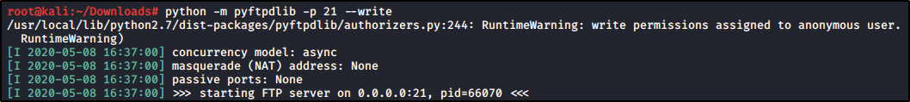

We need to pass a file from the Windows machine to our Kali machine:
We can do that with a Python (FTP) / Windows (FTP) combo:

Use SHIFT+RIGHT CLICK to show the command line option
We are sending the windows_service.c
Now in linux, we are going to edit the file, and edit the system command: Before:
After:
(in this case, use is an username!!)
Save the file and now compile with mingwc: x86_64-w64-mingw32-gcc windows_service.c -o x.exe
(NOTE: if this is not installed, use 'sudo apt install gcc-mingw-w64')
Now, pass this executable to the windows machine.
You can use whatever combo you like to do that
Now, that is the crucial part.
We are going to overwrite the executable used by the service